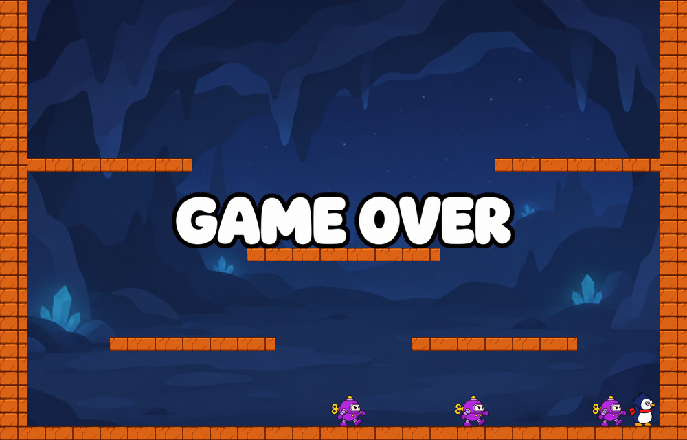
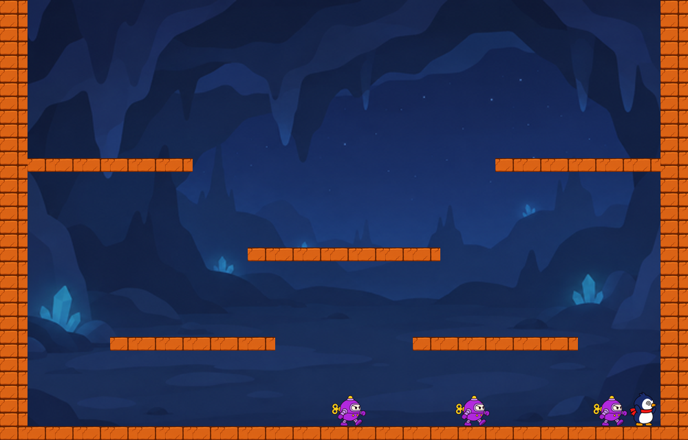

15장. 게임오버
14장에서는 게임을 실행할 때 배경음악이 반복해서 나오도록 만들었습니다. 아직은 펭귄이 갇히지 않은 적군에 닿아도 게임이 계속됩니다. 이번 장에서는 적군에 닿으면 펭귄을 쓰러진 그림으로 바꾸고 모든 물체의 움직임을 멈춥니다. 화면 가운데에는 GAME OVER를 표시하고 게임오버 소리를 한 번 재생합니다.

15-1 적군에 닿으면 루프 멈추기
플레이어와 적군, 물방울의 움직임은 모두 tick()에서 갱신합니다. 이 메서드를 반복 호출하는 Timer 하나를 멈추면 됩니다. 물체마다 멈추는 코드를 넣을 필요가 없습니다.
펭귄이 갇히지 않은 적군에 닿으면 게임오버가 됩니다. 갇힌 적군에 닿았을 때는 13장에서 만든 터트리기 동작을 그대로 유지합니다.
타이머를 필드에 보관하기
src/bubble/game/Player.java와 src/bubble/game/BubbleFrame.java를 수정합니다. Player에는 쓰러진 그림과 그림을 바꾸는 메서드를 추가합니다. BubbleFrame에는 게임오버 조건과 타이머를 멈추는 메서드를 추가합니다.
private boolean right; private ImageIcon playerR; private ImageIcon playerL; private ImageIcon playerDie; public Player() { super(80, 40, Direction.RIGHT); playerR = new ImageIcon("image/playerR.png"); playerL = new ImageIcon("image/playerL.png"); playerDie = new ImageIcon("image/playerDie.png"); setIcon(playerR); }⋯ dy = JUMP; } } public void die() { setIcon(playerDie); }} private List<Bubble> bubbles = new ArrayList<>(); private List<Enemy> enemies = new ArrayList<>(); private JLabel clear; private Timer timer; public BubbleFrame() { setTitle("버블 게임");⋯ } }); new Timer(16, e -> tick()).start(); timer = new Timer(16, e -> tick()); timer.start(); Sound bgm = new Sound("sound/bgm.wav"); bgm.loop();⋯ enemy.pop(); remove(enemy); } if (touch && !enemy.isBubbled()) { gameOver(); return; } } enemies.removeIf(enemy -> enemy.isPopped()); if (enemies.isEmpty()) {⋯ repaint(); } private void gameOver() { timer.stop(); player.die(); } private void shoot() { Bubble bubble = new Bubble(player); bubbles.add(bubble);앞 장까지는 new Timer(16, e -> tick()).start()로 타이머를 만들자마자 시작했습니다. 이 방식으로도 게임 루프는 실행됩니다. 하지만 타이머를 변수에 저장하지 않아 나중에 멈추려 할 때 참조할 이름이 없습니다.
이번에는 Timer를 timer 필드에 저장하고 timer.start()를 호출합니다. 생성자에서 시작한 타이머를 gameOver()에서도 참조할 수 있습니다.
쓰러진 그림과 게임오버 조건 연결하기
Player의 playerDie는 미리 제공한 image/playerDie.png를 읽어 둡니다. die()는 setIcon(playerDie)를 호출해 펭귄의 그림을 바꿉니다. 움직임은 BubbleFrame의 타이머를 멈춰 정지시키므로, die()에는 그림을 바꾸는 코드만 둡니다.
tick()에 추가한 조건은 touch && !enemy.isBubbled()입니다. 앞에서 구한 touch가 참이고 적군이 갇힌 상태가 아닐 때 gameOver()를 호출합니다. 갇힌 적군을 터트리는 조건과 갇히지 않은 적군에 닿아 게임오버가 되는 조건을 나눈 셈입니다.
gameOver()는 먼저 timer.stop()으로 게임 루프를 멈춥니다. 이어서 player.die()로 펭귄을 쓰러진 그림으로 바꿉니다.
여기서 gameOver() 다음의 return도 필요합니다. timer.stop()은 다음 반복 호출을 멈추지만, 이미 실행 중인 tick()을 끝내지는 않습니다. return을 넣으면 실행 중인 tick()도 그 자리에서 끝납니다. 뒤에 있는 적군 목록 정리와 클리어 검사로 넘어가지 않습니다.
적군에 닿아 멈춤 확인하기
게임을 다시 실행합니다. 물방울에 갇히지 않은 적군 쪽으로 펭귄을 움직입니다. 물방울도 미리 쏘아 두면 함께 멈추는지 확인하기 좋습니다.
실행 결과
펭귄이 적군에 닿으면 어지러운 눈의 쓰러진 그림으로 바뀝니다. 적군과 물방울도 그 자리에 멈춥니다. 이 단계에서는 배경음악이 계속 나옵니다. 게임 루프와 소리 재생은 별개이기 때문입니다.

15-2 GAME OVER 맨 앞에 보이기
물체가 멈춘 화면에 GAME OVER를 표시하면 게임이 끝났다는 사실이 분명해집니다. 13장의 CLEAR!처럼 그림을 담은 JLabel을 미리 만들고 숨겨 둡니다. 게임오버가 되는 순간에만 보이게 합니다.
게임오버 그림을 숨겨 두기
src/bubble/game/BubbleFrame.java를 수정합니다. gameover 필드를 추가하고, 생성자에서 그림의 위치와 표시 순서를 정합니다.
private List<Bubble> bubbles = new ArrayList<>(); private List<Enemy> enemies = new ArrayList<>(); private JLabel clear; private JLabel gameover; private Timer timer; public BubbleFrame() {⋯ clear.setVisible(false); add(clear, 0); gameover = new JLabel(new ImageIcon("image/gameover.png")); gameover.setBounds(250, 279, 500, 82); gameover.setVisible(false); add(gameover, 0); addKeyListener(new KeyAdapter() { @Override public void keyPressed(KeyEvent e) {⋯ private void gameOver() { timer.stop(); player.die(); gameover.setVisible(true); } private void shoot() {gameover는 image/gameover.png를 담은 JLabel입니다. setBounds(250, 279, 500, 82)로 화면 가운데에 놓습니다. 게임을 시작하자마자 글자가 보이지 않도록 setVisible(false)로 숨깁니다.
add(gameover, 0)의 0은 컴포넌트를 앞뒤로 배치하는 Z 순서입니다. 같은 컨테이너 안에서는 Z 순서가 0인 컴포넌트가 맨 앞에 그려집니다. 따라서 게임오버 그림을 벽돌과 다른 게임 물체보다 앞에 표시할 수 있습니다.
gameOver()에는 gameover.setVisible(true)를 추가합니다. 타이머를 멈추고 펭귄을 쓰러뜨린 뒤, 숨겨 둔 글자를 드러내는 순서입니다.
멈춘 화면 위에 글자 확인하기
게임을 다시 실행하고 갇히지 않은 적군에 닿습니다.
실행 결과
펭귄이 쓰러지고 모든 물체가 멈춥니다. 화면 가운데에는 GAME OVER가 나타납니다. 글자가 벽돌에 가려지지 않고 맨 앞에 보이는지 확인합니다.
15-3 배경음악 끄고 게임오버 소리 내기
게임 루프를 멈춰도 클립은 계속 소리를 재생합니다. 게임오버가 되면 배경음악도 별도로 멈춰야 합니다. 이어서 게임오버 소리를 한 번 재생합니다.
14장에서 사용한 반복 재생과 이번에 추가할 한 번 재생은 모두 Clip의 메서드를 사용합니다. 반복 재생에는 loop(), 한 번 재생에는 start(), 재생 중지에는 stop()을 씁니다.
Sound에 재생과 중지 메서드 추가하기
src/bubble/game/Sound.java와 src/bubble/game/BubbleFrame.java를 수정합니다.
clip.loop(Clip.LOOP_CONTINUOUSLY); } } public void play() { if (clip != null) { clip.start(); } } public void stop() { if (clip != null) { clip.stop(); } }} private JLabel clear; private JLabel gameover; private Timer timer; private Sound bgm; public BubbleFrame() { setTitle("버블 게임");⋯ timer = new Timer(16, e -> tick()); timer.start(); Sound bgm = new Sound("sound/bgm.wav"); bgm = new Sound("sound/bgm.wav"); bgm.loop(); pack();⋯ timer.stop(); player.die(); gameover.setVisible(true); bgm.stop(); new Sound("sound/gameover.wav").play(); } private void shoot() {Sound의 play()는 clip.start()를 호출합니다. 이번 게임오버 소리는 새로 만든 Sound에서 재생합니다. 따라서 처음부터 끝까지 한 번 나옵니다.
stop()은 clip.stop()을 호출해 재생을 멈춥니다. 두 메서드 모두 clip != null을 먼저 검사합니다. clip이 null이면 호출하지 않습니다. open() 실패 여부까지 확인하는 조건은 아닙니다.
재생 중인 배경음악을 필드로 참조하기
앞 장의 Sound bgm = new Sound("sound/bgm.wav")에서 bgm은 생성자 안에서만 쓸 수 있는 지역 변수였습니다. gameOver()에서도 같은 배경음악을 멈추려면 생성자 밖에서 참조할 수 있어야 합니다.
그래서 private Sound bgm 필드를 추가합니다. 생성자에서는 bgm = new Sound("sound/bgm.wav")로 값을 넣습니다. 생성자에서 반복 재생을 시작한 바로 그 Sound를 gameOver()에서 멈추게 됩니다.
gameOver()의 bgm.stop()은 배경음악을 멈춥니다. 그다음 new Sound("sound/gameover.wav").play()가 게임오버 소리를 새 클립에 읽어 한 번 재생합니다.
전체 흐름은 tick()의 충돌 검사에서 시작합니다. 갇히지 않은 적군에 닿으면 gameOver()를 호출합니다. 타이머를 멈추고 펭귄 그림을 바꾼 뒤, GAME OVER를 표시합니다. 이어서 배경음악을 멈추고 게임오버 소리를 재생합니다.
타이머가 멈췄으므로 충돌 검사도 반복되지 않습니다. 게임오버 소리가 매 틱 다시 시작되지 않는 이유입니다.
화면과 소리 함께 확인하기
게임을 다시 실행합니다. 먼저 배경음악이 나오는지 듣고, 갇히지 않은 적군에 닿습니다.
실행 결과
화면은 15-2절과 같습니다. 쓰러진 펭귄 옆에 적군이 멈춰 있고, 가운데 맨 앞에 GAME OVER가 보입니다. 배경음악은 멈추고 게임오버 소리가 한 번 나온 뒤 끝납니다. 소리의 변화는 화면 사진으로 확인할 수 없으므로 직접 실행해서 듣습니다.
15장 완성 코드 보관하기
수정한 파일을 모두 저장합니다. src/bubble/game에서 완성한 코드를 ex15에 복사해 보관합니다. 이 장까지 따라 작성하면 이동, 점프, 물방울 공격, 적군 가두기와 터트리기, 클리어와 게임오버를 갖춘 버블 게임이 완성됩니다.